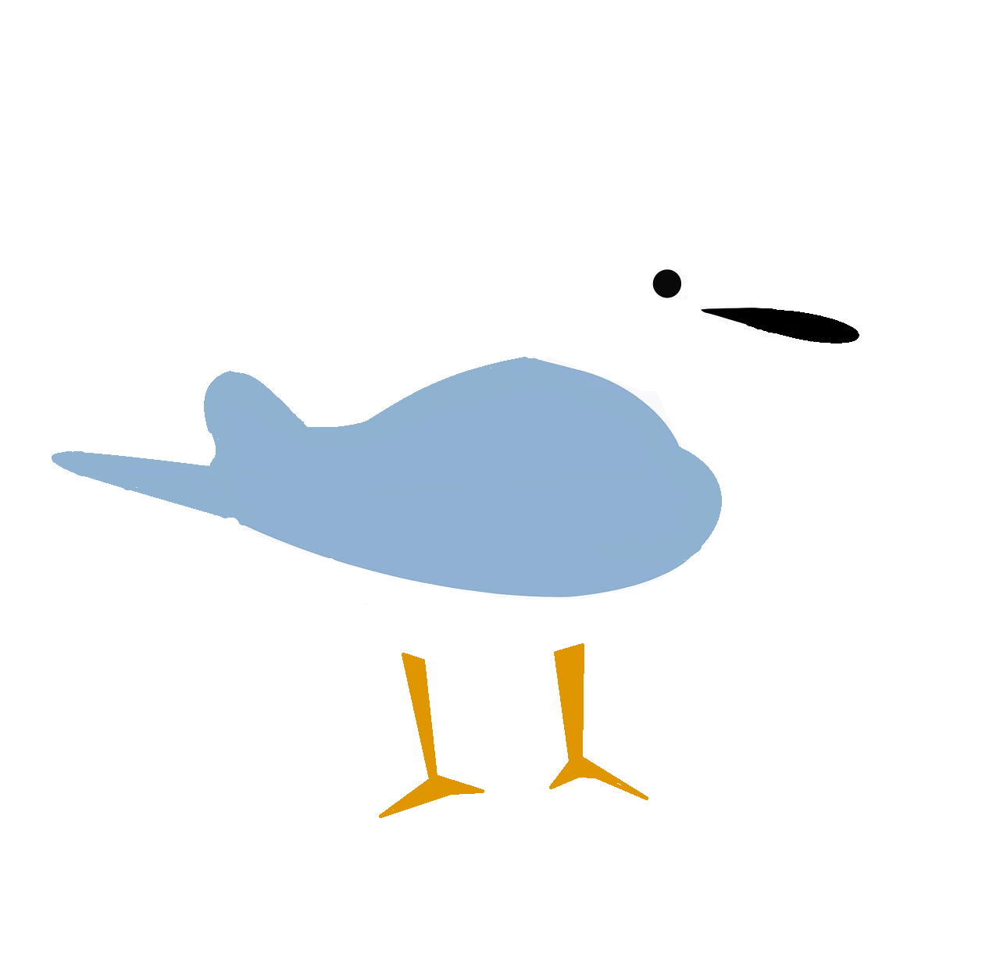

嗨，我是邢耀杰
一个总爱仰望星空, 也愿意低头捡拾贝壳的少年。 我见过城市角落的流浪猫， 便用废旧纸箱为它们搭建避雨的港湾； 我听过山区孩子对音乐的渴望， 便攒下零花钱买口琴， 在社区广场教他们吹奏《小星星》 。我知道这些事很小 ，但如果每个人都弯腰捡起一枚贝壳， 或许就能铺成通往远方的路。
我见过城市角落的流浪猫， 便用废旧纸箱为它们搭建避雨的港湾； 我听过山区孩子对音乐的渴望， 便攒下零花钱买口琴 ，在社区广场教他们吹奏《小星星》 。我知道这些事很小 ，但如果每个人都弯腰捡起一枚贝壳 ，或许就能铺成通往远方的路。
我不怕失败 。上次发明的“自动浇花器”把阳台淹成了水帘洞 ，爸爸却认真问我： “下次打算怎么改进？”那一刻我明白 ，改变世界不是要立刻造出火箭 ，而是保持对问题的好奇， 对失败的坦然 ，对“再试一次”的勇气
我或许还不够强大， 但我的眼睛里藏着光。我相信 ，当千万束这样的光汇聚 ，就能照亮那些还没被看见的角落。
欢迎来到我的数字花园， 这里种着我正在生长的梦想。
2026.8.9 第二版